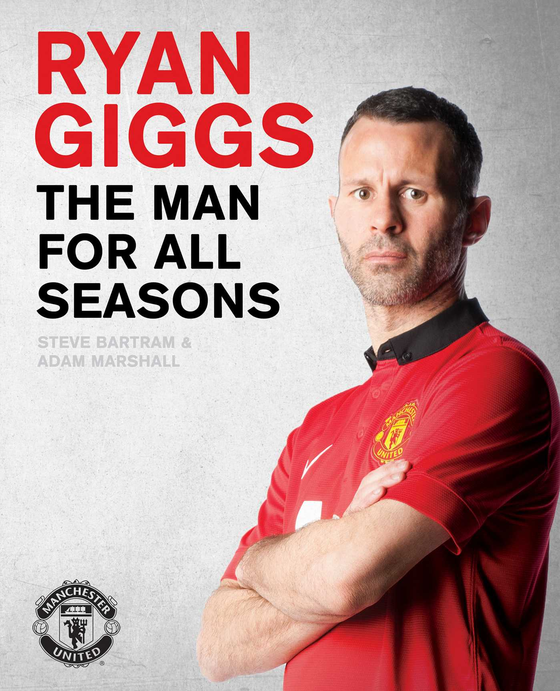
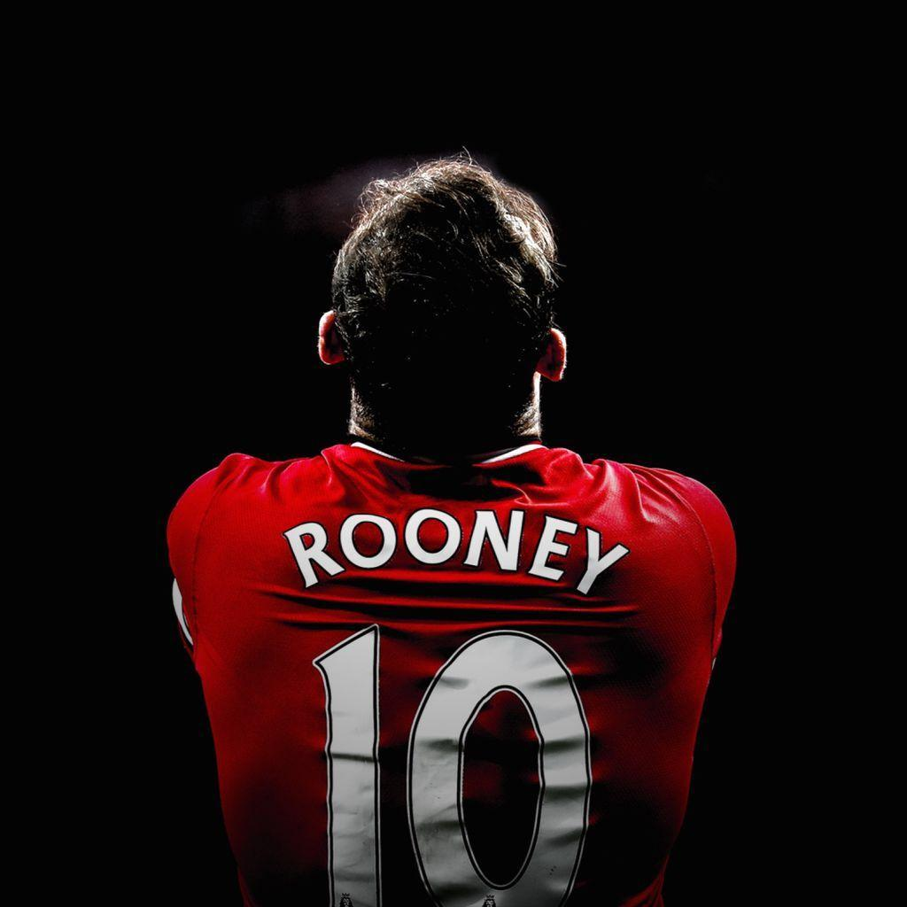

LEGENDS
Cristiano Ronaldo
Cristiano Ronaldo dos Santos Aveiro GOIH ComM (Portuguese pronunciation: [kɾiʃˈtjɐnu ʁɔˈnaɫdu]; born 5 February 1985) is a Portuguese professional footballer who plays as a forward for Premier League club Manchester United and captains the Portugal national team. Often considered the best player in the world and widely regarded as one of the greatest players of all time, Ronaldo has won five Ballon d'Or awards[note 3] and four European Golden Shoes, the most by a European player. He has won 32 trophies in his career, including seven league titles, five UEFA Champions Leagues, one UEFA European Championship and one UEFA Nations League. Ronaldo holds the records for most appearances (181), most goals (140) and assists (42) in the Champions League, most goals in the European Championship (14), most international goals by a male player (115), and most international appearances by a European male (184). He is one of the few players to have made over 1,100 professional career appearances, and has scored over 800 official senior career goals for club and country
RYAN GIGGS

Ryan Giggs closed one chapter of his football career - the epic, decades-spanning story of him as a player - on the same day he started a new one, as Manchester United’s new assistant manager.
That day, Monday 19 May 2014, came nearly a fortnight after Giggs made what proved to be his final appearance on the field - in the Reds’ 3-1 win over Hull City at Old Trafford. At that time he was serving with a dual purpose, playing as a substitute but also managing the first team temporarily. The aptitude Ryan showed in his four-match stint in charge, and the knowledge he had amassed as a player at the club since 1990, made him an ideal right-hand man for new boss Louis van Gaal.
ad van Gaal arrived at Old Trafford in a previous year, he would have had the pleasure of selecting Giggs on his team sheet. The type of player he would have utilised would depend on the year in question - in more than two decades, Ryan adapted and evolved his style from daring and dashing tormentor of full-backs to latterly a calming influence in midfield with a sharp eye for a pass.
By 2013/14, his legs may have lost their explosive acceleration but his brain remained ahead of many a younger rival and his ability to produce telling crosses and assists was never better. In summary, the Welshman was a phenomenon as a footballer - a man to be treasured and talked about in revered tones long after his retirement.
Ryan is United's record appearance-maker of course; he surpassed Sir Bobby Charlton's 758 on the night he helped the Reds secure a third European Cup triumph - his second - in Moscow on 21 May 2008. His eventual total of 963 games for United will surely never be topped with one-club men seemingly now a breed of football’s past.
Yet United's most decorated player might never have graced Old Trafford, had it not been for Sir Alex Ferguson’s intervention. Cardiff-born Giggs was attending Manchester City's School of Excellence in his early teens, but Sir Alex made a personal visit to his house on his 14th birthday and Ryan jumped at the chance to sign for his boyhood favourites.His eventual total of 963 games for United will surely never be topped with one-club men seemingly now a breed of football’s past. Yet United's most decorated player might never have graced Old Trafford, had it not been for Sir Alex Ferguson’s intervention. Cardiff-born Giggs was attending Manchester City's School of Excellence in his early teens, but Sir Alex made a personal visit to his house on his 14th birthday and Ryan jumped at the chance to sign for his boyhood favourites.yan is United's record appearance-maker of course; he surpassed Sir Bobby Charlton's 758 on the night he helped the Reds secure a third European Cup triumph - his second - in Moscow on 21 May 2008. His eventual total of 963 games for United will surely never be topped with one-club men seemingly now a breed of football’s past
Wayne Rooney

Wayne Mark Rooney (born 24 October 1985) is an English professional football manager and former player. He is the manager of EFL Championship club Derby County,[4] for whom he previously served as interim player-manager.[5] He spent much of his playing career as a forward while also being used in various midfield roles. Widely considered one of the best players of his generation, Rooney is the record goalscorer for both the England national team and Manchester United
Rooney joined the Everton youth team at the age of nine and made his professional debut for the club in 2002 at the age of 16. He spent two seasons at the Merseyside club, before moving to Manchester United for £25.6 million in the 2004 summer transfer window where he won 16 trophies and became the only English player, alongside teammate Michael Carrick, to win the Premier League, FA Cup, UEFA Champions League, League Cup, UEFA Europa League, and FIFA Club World Cup.[7][8][9] He scored 253 goals for United in all competitions to make him their top goalscorer of all time, with 183 Premier League goals being the second most scored by a player for any single club, behind Sergio Agüero (184 goals for Manchester City). Rooney's 208 Premier League goals make him the Premier League's second-top scorer of all time. He also has the third-highest number of assists in the Premier League, with 103
DAVID BECKHAM

David Robert Joseph Beckham OBE[4] (UK: /ˈbɛkəm/;[5] born 2 May 1975) is an English former professional footballer, the current president & co-owner of Inter Miami CF and co-owner of Salford City.[6] He played for Manchester United, Preston North End (on loan), Real Madrid, AC Milan (on loan), LA Galaxy, Paris Saint-Germain and the England national team, for which he held the appearance record for an outfield player until 2016. He is the first English player to win league titles in four countries: England, Spain, the United States and France. He retired in May 2013 after a 20-year career, during which he won 19 major trophies.
Known for his range of passing, crossing ability and bending free-kicks as a right winger, Beckham has been hailed as one of the greatest and most recognisable midfielders of his generation, as well as one of the best set-piece specialists of all time.[15][16] He was runner-up in the Ballon d'Or in 1999, twice runner-up for FIFA World Player of the Year (1999 and 2001) and in 2004 was named by Pelé in the FIFA 100 list of the world's greatest living players.[17][18][19] He was inducted into the English Football Hall of Fame in 2008 and the Premier League Hall of Fame in 2021.[20] A global ambassador of the sport, Beckham is considered to be a British cultural icon
player of the month
David de gea
| name | AGE | |
|---|---|---|
| sebastian | seban@gmail.com | 50 |
| mexastian | mexan@gmail.com | 56 |